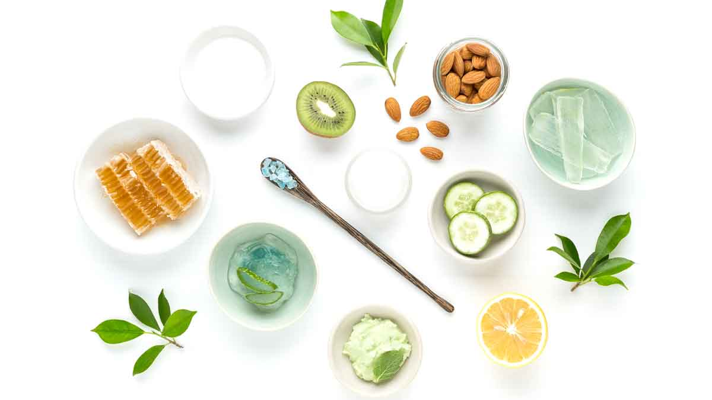

You can make your own beauty products at home, with natural ingredients. You probably already have it in your kitchen. It is simple and fun. Pick a recipe and let's do it !

For dry skin
Avocado face mask
If you have dry skin, you know that the majority of dry-skin remedies involve heavy oils. Try this mask to hydrate your dry skin !